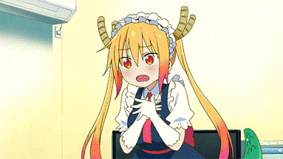
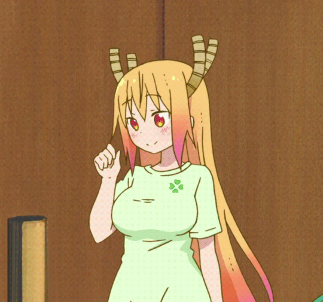
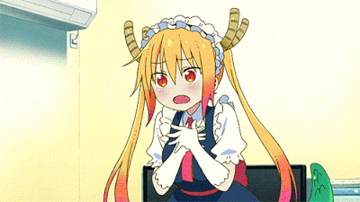
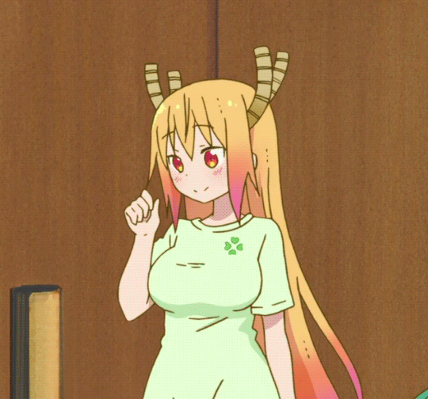

Tohru Kobayashi
Kobayashi's dragon maid
About Tohru
Tohru is a female dragon with the ability to transform into a human girl. After Kobayashi rescues her, she falls in love with her and decides to work for her as a maid. Tohru was raised to believe that humans were evil, inferior and foolish beings, which explains her initial distaste towards the human race and her alignment with the Chaos Faction. She was heavily injured by a god leading a human army in her last battle, forcing her to retreat to the modern world to hide where she meets Kobayashi, who rescues her from the verge of death. On that same day, she falls in love with Kobayashi and takes her up on her offer to live with her as her maid.
Appearance
In her human form, Tohru has long blonde hair with flaming orange tips with pink/purple added to the hair and red-orange eyes with dilated pupils, and a buxom figure with large thighs and plump, bouncy breasts, claiming to be a D cup (for dragon size). She magically transforms her scales into a maid outfit, copying the uniform from a maid cosplay cafe (Maid Cafe Cozy) after flying to Kobayashi's apartment the first time. While in the private comfort of Kobayashi's apartment, Tohru wears her tail out, and on occasion, her wings. Outside, she hides both her tail and wings but retains her horns. Anyone who notices usually chalks it up to a form of cosplay. Tohru's dragon form appears as a big green European dragon with black wings and a light green underbelly. The height of her dragon form towers over Kobayashi's old apartment that's four stories high
Personality
As a Chaos Dragon, Tohru was raised to hate humans and is supposed to be a fierce and dangerous dragon with nothing other than destruction in mind, but this all changed when she met Kobayashi. She is now cheerful and kind to every human she meets, except for those who are a real or, as it is in most cases, imagined rival love interest to Kobayashi. She is also quickly influenced by what she sees on the television or internet. Tohru is sexually attracted to Kobayashi, telling the latter herself, and often performs acts out of a sexual desire for her, such as licking her clothes clean, offering to lotion her body, and attempting multiple times to get Kobayashi to specifically eat her tail meat, despite Kobayashi claiming to be ethically against consuming.
 


